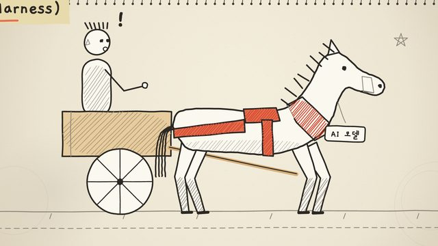
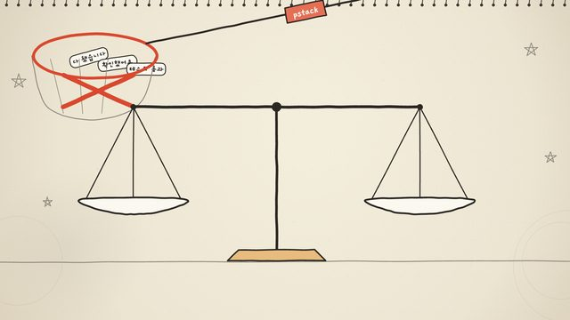

빨간 "pstack" 태그가 실에 끌려 들어오고 스틱맨이 다가가자, 비슷하게 생긴 회색 "stack" 태그들이 쏟아져 그것을 묻고 카메라가 물러나며 공책 제본이 드러난다.

말이 끄는 수레에 하네스를 그렸다 지웠다 다시 그리며, 하네스가 말을 수레에 붙잡아 두는 장치임을 보여 준다.

카드 다섯 장으로 위계가 그려지고, 이어서 AI가 모자로 표시된 역할들을 맡는다.

흩어진 종이가 손글씨 단어 수 아래 한 묶음으로 모여 빨간 표지가 씌워진 뒤, 제목과 책이 왼쪽 위 작은 꼬리표로 줄어들며 책상 장면이 화면을 채운다: 코드 줄, 재생 버튼, 버그가 있는 큰 모니터와 그 옆에 명찰을 단 안경 쓴 선배.

0과 1을 표시한 팻말 사이로 pstack 도구함이 휴대폰 체크리스트 쪽으로 움직이며, 작동하는 하나를 여럿으로 늘린다.

테이프로 붙인 버그 수정 메모가 가설과 수정을 구분하고, 로봇이 라벨 붙은 꾸러미를 살핀다.

클립보드를 든 로봇이 동전 상자 옆에 서 있고, 인용 메모(30분 대 1시간) 아래 알람 시계 둘이 "without pstack"과 "pstack"을 비교한다.